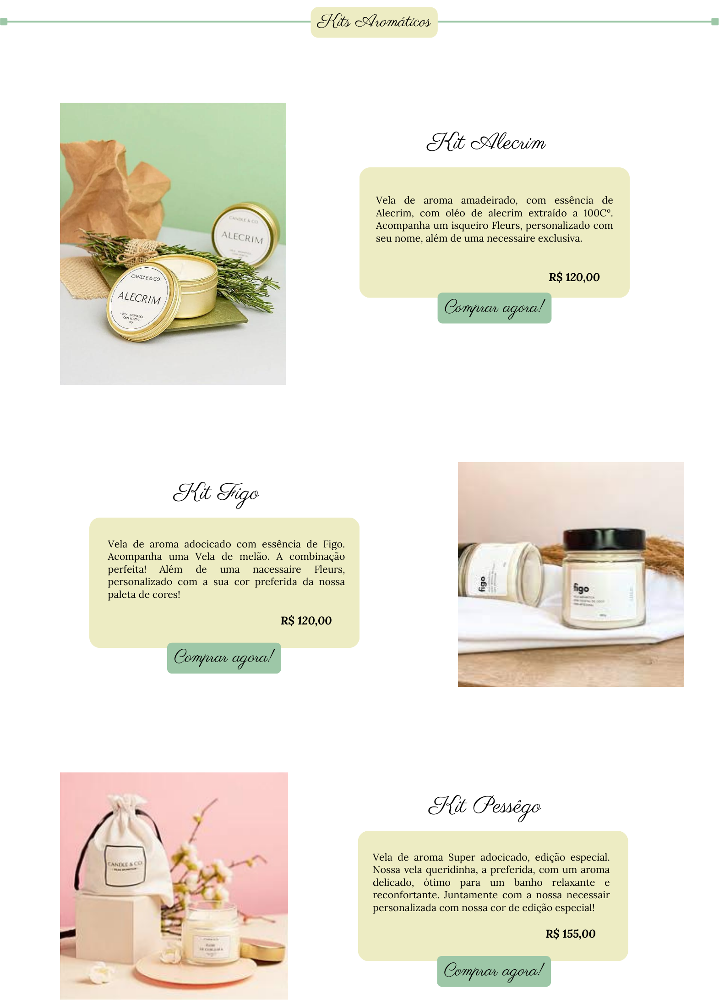

OLÁ, EU SOU
Amanda Doneles |
DESENVOLVEDORA FRONT-END


Fleurs foi pensado para ser uma loja online, tendo um estilo mais clean/elegante. Sua principal proposta é vender um produto com conceitos diferentes dos casuais, a loja é exibida destacando os produtos de forma profissional, e ao mesmo tempo como um trabalho artesanal.
A loja possui cores em tons suaves que remetem cuidado e atenção aos olhos dos clientes, segundo a psicologia das cores.
Um local acolhedor e confortável, super acessível e dinâmico.

Pirates Beer é um bar temático de piratas, estilizado para ser um site dark. Elementos em modo escuro se juntam por todo o projeto, sempre em sintonia com a coloração inicial de logotipo.

Conta com um menu acessível e dinamico
E um espaço reservado aos personalizados com a logomarca, destacando bem o produto. Links personalizados.